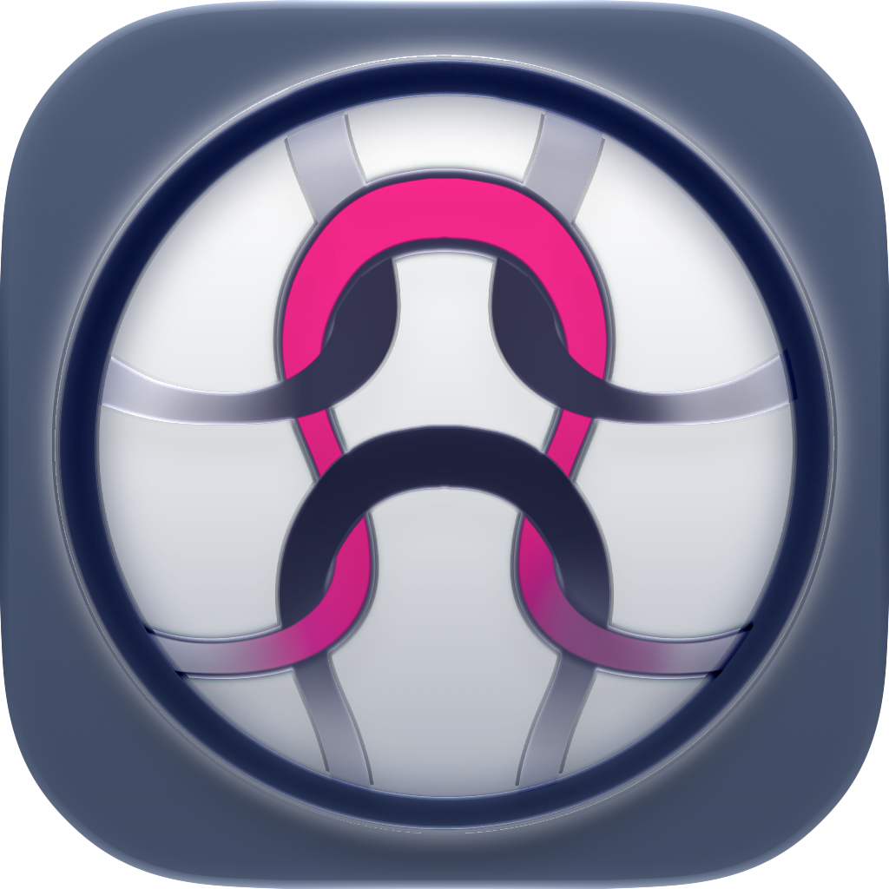

Si has llegado hasta aquí, espero que te encanten las prendas tejidas a mano y que ya conozcas las ventajas de Knitting Suite.
Entonces ya sabes que no recopilamos datos de los usuarios, que no hay enlaces a terceros ni publicidad y que no te supone ningún coste: ¡sabes que simplemente puedes crear fantásticas combinaciones de colores y patrones y combinarlos en tus proyectos!
¿Aún así has llegado a esta página porque tienes alguna pregunta o sugerencia? Echa un vistazo o escríbenos para que podamos ayudarte.
Disfruta del resto de tu viaje por el acogedor mundo del punto.
¿Cómo puedo organizar las muestras de punto, las combinaciones de colores y los patrones de varios proyectos para poder utilizarlos en nuevos proyectos y encontrarlo todo rápidamente cuando lo necesite?
Todos tus elementos, como las muestras de punto, las combinaciones de colores y los patrones, se guardan en listas a las que puedes acceder a través del Organizer. Por ejemplo, si tienes una idea para un patrón, puedes crearlo primero y, más adelante, cuando tengas una idea para un proyecto, añadir ese patrón al nuevo proyecto.
¿Cómo puedo encontrar rápidamente elementos específicos de mis listas y mis favoritos?
Puedes marcar los elementos de tus listas como favoritos en el modo de edición mediante el botón del corazón. En la vista general de las listas, puedes filtrar tus favoritos utilizando el botón del corazón del menú superior. También puedes ordenar los elementos directamente mediante la función de arrastrar y soltar para organizarlos como prefieras.
La aplicación conserva el orden que hayas elegido incluso después de cerrarla. Así, siempre tendrás todo bajo control con tu propia organización personalizada. Si necesitas buscar algo, solo tienes que utilizar el botón de la lupa para realizar una búsqueda de texto completo
¿Puedo eliminar entradas de la lista?
Sí, si deslizas la entrada hacia la izquierda, encontrarás un botón para eliminarla. Si has vinculado el elemento a un proyecto, aparecerá un aviso antes de eliminarlo.
¿Puedo utilizar los contadores del proyecto en paralelo?
Ya hay un conjunto de contadores predefinido para cada tipo de proyecto. Cuando creas un nuevo proyecto, puedes utilizar estos contadores directamente, ya que se adaptan a tus medidas y a la muestra de punto de tu proyecto. Todos los contadores del proyecto conservan su estado cuando cambias de uno a otro. En el Atelier, puedes pasar de un contador a otro de forma rápida y sencilla con un gesto de deslizamiento.
Además de los contadores predefinidos, en el modo de edición del proyecto puedes desplazarte hasta la sección “Belonging Counters”. Allí, mediante el botón plus, puedes añadir más contadores y utilizarlos en el proyecto.
¿Cómo sé cuándo he llegado a una vuelta de mi tejido en la que debo hacer un ajuste?
Los contadores integrados ya incluyen todas las instrucciones que necesitas para las partes más complicadas de tu proyecto, como cuándo empezar a disminuir puntos para dar forma al canesú o cuándo las mangas deben alcanzar el contorno deseado. Estas instrucciones aparecen automáticamente cuando el contador llega a la vuelta calculada para ese paso.
¿Cómo puedo crear contadores adicionales?
Además de los contadores predefinidos, puedes desplazarte hasta la sección “Belonging Counters” en el modo de edición del proyecto. Allí, puedes utilizar el botón con el signo más para añadir más contadores y utilizarlos en tu proyecto.
Al crear un contador, verás inmediatamente la altura total a medida que introduces las vueltas previstas. Esto es posible porque estos contadores también están vinculados a tu muestra de punto.
¿Puedo ajustar o reiniciar los contadores?
Sí, puedes reiniciar el contador por completo directamente desde el propio contador mediante el botón de eliminar (a la izquierda) o ajustarlo de uno en uno utilizando el botón de ajuste (a la derecha).
¿Cómo puedo añadir notas y recordatorios a mis proyectos de tejido?
Cada uno de tus proyectos dispone de un campo para notas. Tienes dos opciones para añadir o editar una nota en tu proyecto:
Puedes hacer clic en el botón de notas del menú superior izquierdo, directamente en el Atelier. Se abrirá una ventana en la que podrás introducir y guardar las notas correspondientes a tu proyecto.
También puedes hacer clic en «Edit» en la vista de tu proyecto y escribir tus propias experiencias o información importante en la sección «Notas».
¿Cómo puedo borrar rápidamente el contenido de mis notas?
Una vez que hayas abierto el campo de notas, puedes utilizar el botón con el icono de la goma de borrar para eliminar rápida y fácilmente todo el contenido.
Si has pulsado el botón por accidente, simplemente cancela la acción sin guardar los cambios y vuelve a empezar.
¿Cómo puedo retomar mi labor de punto justo donde la dejé después de un descanso?
Knitting Suite no necesita marcadores. La aplicación guarda automáticamente tu último estado (por ejemplo, los valores de los contadores) cuando sales o cierras la aplicación. Por ejemplo, si estás tejiendo el patrón de la manga izquierda y vas por la vuelta 6 de 20, el contador recordará esa posición exacta y, la próxima vez que abras ese contador de patrón, podrás continuar desde el mismo punto.
Además, no tienes que continuar necesariamente con la manga izquierda en tu próxima sesión de tejido. Puedes cambiar de contador y, por ejemplo, tejer la manga derecha hasta llegar al mismo punto antes de volver a la izquierda.
Tú decides qué quieres tejer, cuándo hacerlo y hasta dónde quieres avanzar.
¿Cómo puedo añadir un proyecto de tejido al Atelier o cambiar de proyecto?
Para añadir tu proyecto actual al Atelier, pulsa primero el botón del marcador en la barra de menú superior y selecciona el proyecto que quieres tejer. A continuación, confirma tu selección pulsando de nuevo el botón del marcador. El proyecto aparecerá entonces en el atelier.
Así, cada vez que abras el Atelier, tendrás a mano una vista general de tu proyecto, junto con todos los contadores y las notas relacionadas.
Para cambiar de proyecto, simplemente pulsa de nuevo el botón del marcador en el menú superior y selecciona otro proyecto. Cuando confirmes la selección, Knitting Suite sustituirá el proyecto del Atelier por el nuevo.
Si alguna vez olvidas confirmar la selección, no te preocupes: simplemente no podrás volver a la vista de tu proyecto. Solo tienes que confirmar la selección y todo volverá a funcionar con normalidad.
¡Ayuda! ¡Ya no puedo seleccionar ningún proyecto de la lista de proyectos!
Probablemente, el botón del marcador siga activado. Vuelve a pulsarlo para que la lista recupere su fondo de color claro. Entonces podrás volver a navegar a la vista de tu proyecto.
¿Puedo desactivar o controlar las animaciones?
En el Atelier encontrarás el botón de play/stop las animaciones en la esquina abajo a la izquierda. Puedes activarlo o desactivarlo según prefieras.
Atención: Al volver a activarlo, se mostrará una animación diferente. Si buscas una animación específica, pulsa el botón varias veces hasta que aparezca la que deseas.
¿Cómo puedo evitar que la pantalla entre en modo de suspensión mientras tejo con Knitting Suite?
Utiliza el botón del ojo abierto situado en la esquina abajo a la izquierda del Atelier. Esto desactivará el modo de suspensión hasta que vuelvas a pulsar el botón.
¿Puedo valorar mis proyectos de tejido y registrar mis experiencias personales?
Sí, puedes hacerlo mediante un icono de emoji seleccionable en el modo de edición del proyecto. Con el emoji, puedes indicar si tu proyecto ha sido todo un reto, una auténtica tortura o algo que te encanta.
También puedes utilizar el campo de notas para apuntar tus propias impresiones y consejos. De esta manera, toda la información importante queda guardada en el proyecto.
Consejo extra: También puedes utilizar emojis directamente en tus notas.
¿Puedo informar de un problema, enviar comentarios o sugerir una nueva función para la aplicación?
¡Estaremos encantados de recibir tus comentarios y sugerencias para nuevas funciones! Así que no dudes en enviarnos una buena idea o compartir tus impresiones (¡esperamos que sean positivas!).
Encontrarás la sección «Contacto y comentarios» en los ajustes de la aplicación.
Empieza por hacer la muestra
La muestra define tu forma de tejer. Por ejemplo, si has tejido 20 vueltas de 20 puntos y introduces en la aplicación la altura y la anchura medidas de esta muestra, se podrá calcular todo lo demás.
Solo cuando hayas introducido tu muestra, los contadores se ajustarán a tus medidas.
Calcular con precisión la cantidad de lana necesaria
Coloca tu muestra de punto, sin las agujas, sobre una balanza e introduce el peso en la aplicación.
A continuación, la aplicación te indicará cuánta lana necesitas para tu proyecto. (Para estar totalmente seguro, coge simplemente un ovillo más de lo indicado.)
Aprovecha los restos de lana
Si te sobra lana de tu último proyecto, puedes ver qué otros proyectos puedes hacer con ella.
Mediante una muestra de punto pesada, la aplicación te indicará cuánta lana necesitas. A continuación, pesa los restos de lana y compara ese valor con la cantidad de lana necesaria que indica la aplicación.
¡Utiliza las notas de forma activa!
Anota en el campo de notas cuántas vueltas de puño tejes para la primera manga y cuántas vueltas hasta que empieces el motivo; así podrás tejer el mismo número en la segunda manga sin tener que contar antes.
Colorea varios campos a la vez mientras creas tus patrones
Al crear un patrón, puedes hacer clic en el botón del pincel situado en la parte inferior izquierda. Una vez en el modo pincel, puedes colorear varios campos de tu patrón pasando el ratón por encima de ellos.
El desplazamiento de la vista queda desactivado temporalmente para que no se mueva el patrón mientras lo creas. Si desactivas este modo de coloreado múltiple, podrás volver a desplazarte lateralmente y mover tu patrón de un lado a otro.
Utiliza las tallas estándar seleccionables como valor inicial
Los botones de talla situados junto al esquema de un nuevo proyecto (en la ventana de diálogo para introducir las medidas) te ofrecen valores que luego puedes ajustar a tu gusto. Por ejemplo, haz clic en la talla S y, a continuación, reduce la longitud del jersey de punto para adaptarlo a tu propio estilo.
Personaliza la aplicación a través de los ajustes
Como quizá hayas notado, en la página de ajustes puedes configurar el aspecto y el idioma (inglés o alemán).
Asimismo, aquí puedes cambiar tu nombre para el mensaje de bienvenida.
También puedes modificar la visibilidad predeterminada de los patrones en el contador de patrones o configurar si la pantalla debe permanecer activa en el taller y en los contadores.
¿Eres zurdo y siempre has tenido problemas para ver los patrones de punto? No hay problema, en los ajustes, directamente en la lista de «Consejos e información», activa la opción «Zurdo».
¿A quién no le suenan estos retos? Perder el hilo al aumentar o disminuir puntos, plasmar tus propios diseños y las últimas tendencias, conseguir el ajuste perfecto… Queríamos una solución que hiciera más fácil superar estos retos.
El contenido de esta aplicación tiene como único objetivo ayudarte y apoyarte a la hora de tejer. Ninguno de los contenidos está autorizado ni destinado a fines comerciales, empresariales, de asesoramiento, académicos, profesionales, jurídicamente vinculantes o similares. Trabajamos constantemente para mejorar la aplicación.
Solo asumimos responsabilidad por el uso de la aplicación conforme a su finalidad prevista y exclusivamente dentro del ámbito del «ACUERDO DE LICENCIA DE USUARIO FINAL PARA APLICACIONES CON LICENCIA» (EULA) de la App Store y de las disposiciones legales aplicables.
Además, como desarrolladores de esta aplicación, no asumimos ninguna responsabilidad, en particular por la exactitud, integridad o actualidad de la información, ni por los daños, daños consecuenciales u otras pérdidas que pudieran derivarse de ella.
Te recomendamos hacer siempre una muestra de tensión antes de comenzar un nuevo proyecto y comprar un ovillo de lana de más antes que quedarte corta.
¡Feliz tejido!
El desarrollo de esta aplicación ha llevado mucho tiempo y se basa en muchos años de experiencia. Sería estupendo que dedicaras un momento a dejar unas estrellas en la App Store. Muchas gracias.
Si tienes alguna pregunta, sugerencia o crítica sobre esta aplicación, envía un correo electrónico a:
iolanovateam@gmail.com
No se procesan datos personales al utilizar la aplicación Knitting Suite. Es posible utilizar la aplicación sin tener que revelar información sobre tu identidad.
Si tienes alguna pregunta sobre la ley de protección de datos o tus derechos como interesado, puedes ponerte en contacto con nosotros directamente en cualquier momento en: iolanovateam@gmail.com
La aplicación Knitting Suite está sujeta a las directrices europeas de protección de datos (RGPD). https://commission.europa.eu/law/law-topic/data-protection/legal-framework-eu-data-protection_en
Esta información sobre protección de datos es válida en la actualidad y tiene fecha de octubre de 2026. Debido al desarrollo continuo de nuestra aplicación o a cambios en los requisitos legales o reglamentarios, puede ser necesario modificar la información sobre protección de datos de la aplicación Knitting Suite.